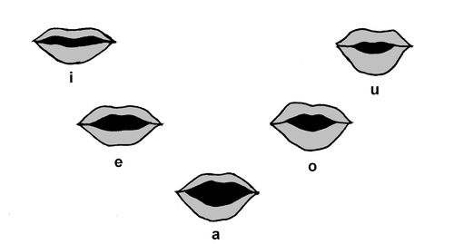

< < < Back
How To Identify A Roast Beef Vagina – Return Of Kings
We’ve all been there. Your dapper charming self has wooed a girl by way of traditional date or maybe night time escalation. You get home, the mood is right, the drinks have been flowing and you have convinced her that in fact, yes… sex is a great idea. That magic moment comes when you start undressing her, she is on your bed and lifts her perfectly shaped bottom 6 inches off the duvet cover so you can slide her underwear off. And then you see it…
The dreaded roast beef. The meat curtains. The sleeve of wizard. Call it what you will, but for most that is quite the turn off and the last thing a man like yourself wants to see flapping in the wind before engaging in the feel-good coitus that could have been. Contrary to popular belief, it is not genetic. Nor is it caused by how many men she’s slept with, or how large those men were. Some porn stars have beautiful entry points. So how does one avoid such a surprise? Are there ways to identify roast beef prior before it’s too late? The answer is YES, and here are 5 ways to do so:
1. The Fatty Paradox

Most fat girls do not have the carcass cape. The reason is simple — the excess fat in and around the pelvic region creates an inverse effect on the vaginal lips, pushing out the blubber and inducing an inwards turn of the labia. Similar to how a black hole operates, the skin is sucked inwards creating the nice vagina effect. While she may pound away a ton of roast beef, at least her nether region will be devoid of any such flap happy activity.
2. Vowels

Avoid girls whose names end in consonants. This may seem strange and unsubstantiated by science, but it’s true. If you have an Erica, a Melissa, an Yvonne, or perhaps an Alexandra, rest assured you will have that perfect slit surprise when you are ready to do the deed. The beautiful symmetry of a nicely shaped vagina, each lip in direct proportion to the other only separated by a slight line. No excess labial flap, no peek-a-boo wraparound meat skin. It’s called the “o” face for a reason.
However, god speed to you if you happen to go home with a Marilyn, an Allison, a Brittany or dare I say a Colleen. I hope you have your spelunking gear ready, because it is going to take some cavernous digging to find that clitoris under those goose wings.
3. Vegetarians

This one is self-explanatory. I have yet to meet a vegetarian girl who sports dildo drapes. If she doesn’t eat meat, she doesn’t yield meat. Rumor has it that protein deficiency causes aesthetically pleasing vaginal formation, but the medical studies have yet to come in on this. Stay tuned.
4. Window Coverings
This tactic only works if you end up at her place. Are her windows covered with blinds and shutters…or curtains and drapes? If it’s blinds or shutters, she psychologically identifies her slit with straight, symmetrical openings. Proceed as normal. If she has curtains or drapes however, she is accustomed to long, malleable pieces of fabric. You can see where this is going…
5. Gym Clothes
Let’s be honest, those accordion lips take up some extra room. So when you meet a girl at a bar, or the office or maybe a friend’s dinner party, just innocuously bring up the gym and what people wear while they exercise. Mention your underarmour clothing. Tell her you have noticed a trend in yoga pants and spandex leggings for female gym attendees. Does she balk at the idea of wearing things so tight? Does she discuss the “freedom” of loose shorts for exercise? If so, you may have a closet pancake draper. Conversely, if she is one of the major proponents of lululemon pants then you may very well have a lady who sports an = sign for a vagina. Congratulations, a winner is you.
Hopefully I have saved some of you from the pain generally associated with being lured into the large labia luncheon. So there you have it. Five almost indisputable ways to identify, and consequently avoid, roast beef.
Read Next: The Perfect Woman: Lips